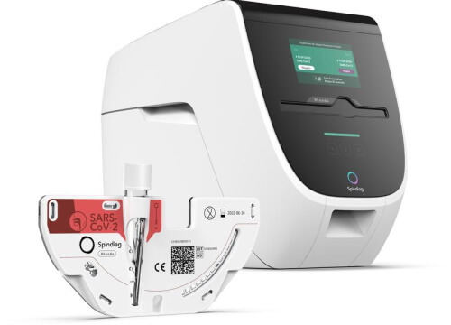

Micro Portal project
One stop medical portal for a serie of programs to collect and analyse blood results.

Handsome
Collect the results of different brands of microlabs sending their measurements to the main system.The program checks the results after verifying the status of the microlab. All results are stored in a central storage system.
The logged in user is the user of the microlab. It is crucial to check the results, the status of the results and receive the approval back.

X-tracked
Various suppliers of blood measurements, such as laboratory, micro-analysis systems, send their results to this system to store them in the main system. Summary and checksums confirm that the results have been successfully received and saved.
Debriever
All results are analyzed and assessed. Add advice and warnings to the results.Result portal
A website that gives you the results of stored blood values, depending on the purpose. New results are featured since the last visit. The result can be exported in various formats to suit client care systems.